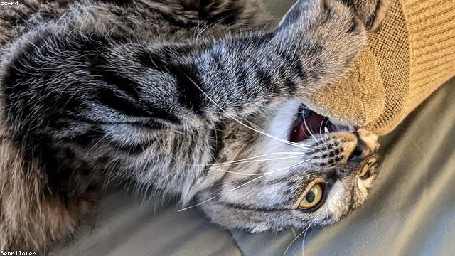

by Ankita Dhandha
This is a note under the subject heading that explains and clarifies what is meant and what is not meant in the definition of the term and in its use as a subject heading.
These falafels are prepared with mashed sweet potatoes, black beans, toasted cumin, and coriander seeds. They are a healthy variation of the classic recipe, as they are oven-baked rather than fried. Serve them with tahini sauce for a tasty appetizer or stuff them in warm pitta bread with salad and tomatoes for a satisfying yet balanced meal.
Define a simple JSON–LD @Graph
Test simple @Graph on Schema.org Markup Validator (SMV)
Use A/B Testing: compare SMV and SDL reports using identical @Graph (SMV/Graph sameAs SDL/Graph) (≡)
On SMV report, click an @Type (PublicationIssue and/or ScholarlyArticle) to see report detail
Define a simple JSON–LD @Graph
Test simple @Graph on Schema.org Markup Validator (SMV)
Use A/B Testing: compare SMV and SDL reports using identical @Graph (SMV/Graph sameAs SDL/Graph) (≡)
On SMV report, click an @Type (PublicationIssue and/or ScholarlyArticle) to see report detail
